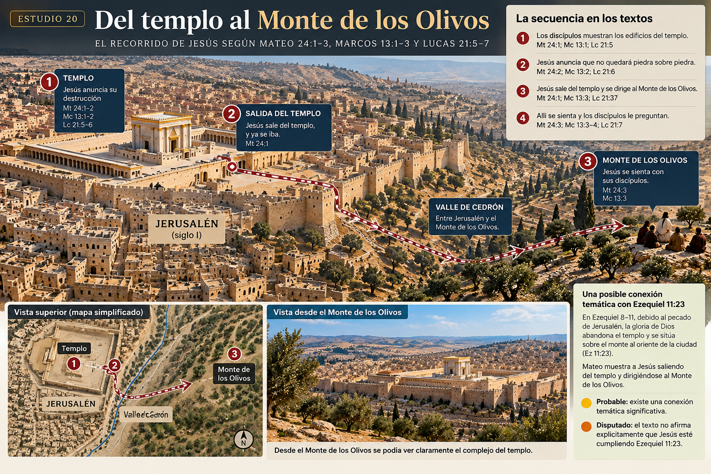
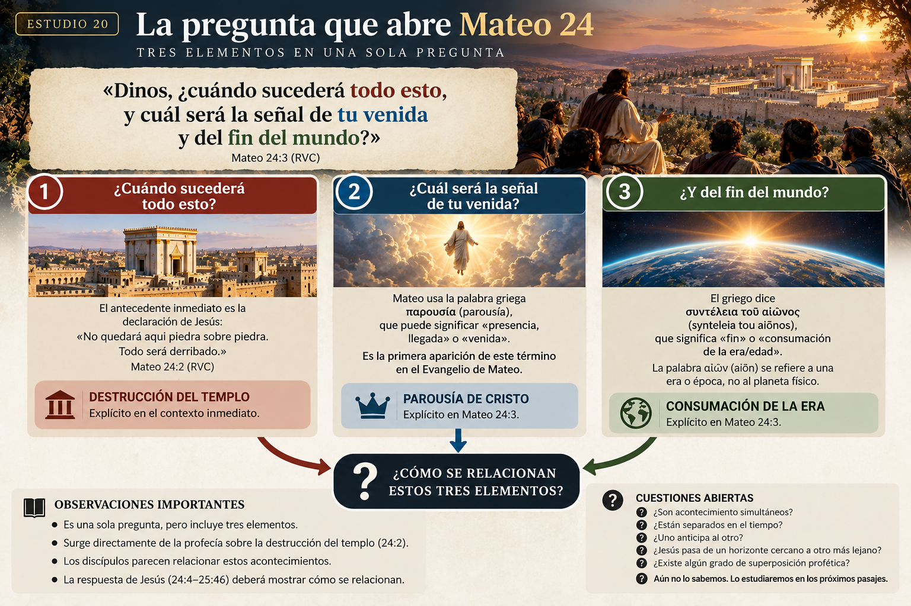
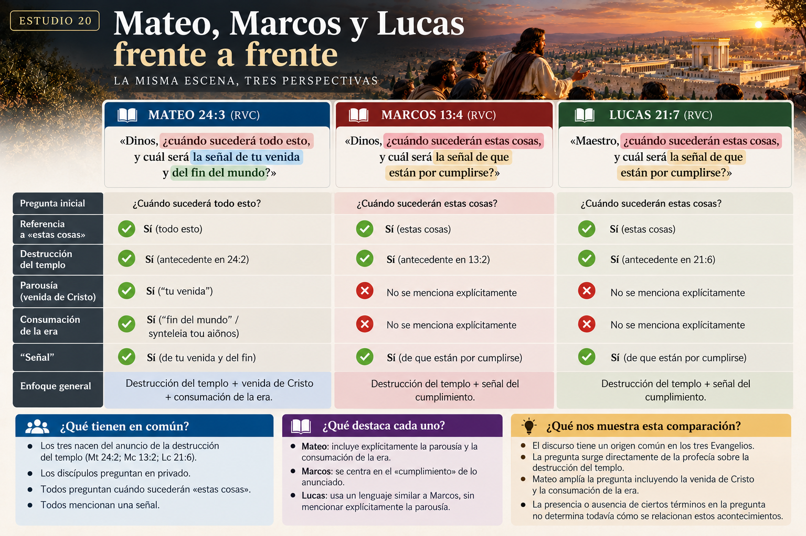
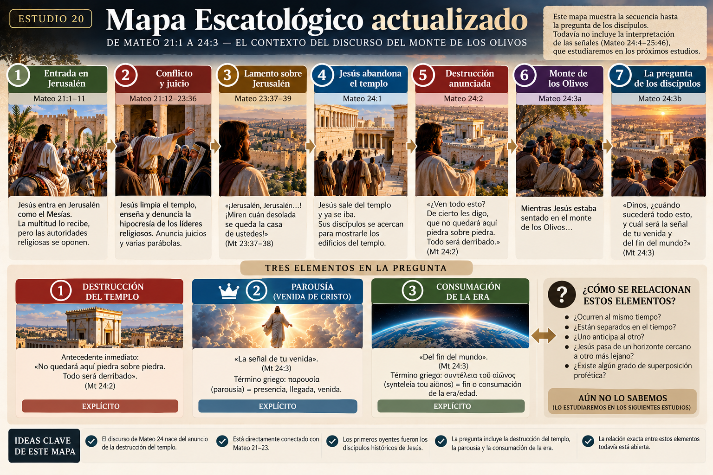

El contexto del discurso del Monte de los Olivos
¿Por qué Jesús habló del fin?
Texto principal: Mateo 23:37–24:3
Paralelos: Marcos 13:1–4; Lucas 21:5–7
Objetivo: entender qué provoca el discurso de Mateo 24 antes de interpretar sus señales.
1. Antes de Mateo 24
Uno de los errores más comunes al estudiar Mateo 24 es comenzar directamente con guerras, terremotos, tribulación y señales.
Pero Jesús no pronunció estas palabras en el vacío.
El discurso ocurre durante la última semana de Jesús en Jerusalén, después de su entrada en la ciudad y de fuertes confrontaciones con las autoridades religiosas. Mateo 21–23 prepara directamente el escenario de Mateo 24.
En Mateo 23, Jesús denuncia repetidamente la hipocresía de escribas y fariseos. El capítulo termina con un lamento sobre Jerusalén:
«¡Jerusalén, Jerusalén, que matas a los profetas y apedreas a los que son enviados a ti!...»
Mateo 23:37, RVC
Y poco después declara:
«¡Miren cuán desolada se queda la casa de ustedes!»
Mateo 23:38, RVC
Esto es fundamental. Mateo 24 continúa una escena de juicio que ya comenzó en Mateo 23.
Muy fuerte: el contexto inmediato del discurso es el conflicto de Jesús con Jerusalén y sus dirigentes, culminando en un anuncio de juicio.
2. Jesús sale del templo
«Jesús salió del templo, y ya se iba...»
Mateo 24:1, RVC
A primera vista parece simplemente una indicación geográfica.
Pero después de Mateo 23:38 —«desolada se queda la casa de ustedes»— la salida de Jesús del templo adquiere un peso narrativo considerable.
Existe además un antecedente interesante en Ezequiel 8–11: debido al pecado de Jerusalén, la gloria de Dios abandona progresivamente el templo y finalmente se sitúa sobre el monte al oriente de la ciudad (Ez 11:23).
Probable: Mateo puede estar evocando temáticamente la salida de la presencia divina descrita en Ezequiel.
Disputado: el texto no dice explícitamente que Jesús esté «cumpliendo Ezequiel 11:23», por lo que no debemos convertir la semejanza en una afirmación segura.
3. Los discípulos miran el templo
«...sus discípulos se acercaron para mostrarle los edificios del templo.»
Mateo 24:1, RVC
Marcos conserva todavía mejor su admiración: «Maestro, ¡mira qué piedras! ¡Qué edificios!» (Mc 13:1, RVC).
Lucas menciona que el templo estaba adornado con hermosas piedras y ofrendas (Lc 21:5).
La reacción es comprensible. El complejo del templo había sido ampliado monumentalmente bajo Herodes el Grande. Su enorme plataforma, sus edificios y sus grandes piedras hacían del lugar una construcción extraordinariamente impresionante.
Pero mientras los discípulos ven grandeza, Jesús anuncia juicio.
4. La declaración que provoca todo Mateo 24
«¿Ven todo esto? De cierto les digo, que no quedará aquí piedra sobre piedra. Todo será derribado.»
Mateo 24:2, RVC
Este versículo es la puerta de entrada al discurso.
Jesús no comienza hablando espontáneamente de un calendario del fin. Primero anuncia algo concreto: la destrucción del templo.
Muy fuerte: la pregunta posterior de los discípulos surge directamente de esta profecía.
Por eso cualquier interpretación de Mateo 24 que ignore la destrucción del templo comienza el estudio demasiado tarde.
5. ¿Por qué era tan impactante?
Para nosotros un templo puede parecer simplemente un edificio religioso. Para un judío del siglo I, el templo de Jerusalén tenía una importancia muchísimo mayor.
Era el centro del culto sacrificial, estaba ligado históricamente a la presencia de Dios entre su pueblo y ocupaba un lugar central en la identidad religiosa de Israel.
La destrucción del primer templo en 586 a.C. había constituido uno de los mayores juicios de la historia de Israel.
Ahora Jesús anuncia nuevamente la destrucción del santuario. Por eso no sorprende que los discípulos quieran saber inmediatamente: ¿cuándo ocurrirá?
6. Del templo al Monte de los Olivos
Después del anuncio, cambia el escenario.
Jesús atraviesa hacia el Monte de los Olivos, situado al este de Jerusalén, desde donde podía contemplarse el área del templo.
«Mientras Jesús estaba sentado en el monte de los Olivos...»
Mateo 24:3, RVC
La escena es poderosa: Jesús está fuera del templo, sentado frente a Jerusalén, después de haber anunciado su destrucción.
Marcos añade un detalle que Mateo no proporciona: quienes le preguntaron en privado fueron Pedro, Jacobo, Juan y Andrés (Mc 13:3). El discurso comienza, por tanto, como enseñanza privada dirigida a discípulos concretos.
Muy fuerte: antes de preguntarnos qué significa Mateo 24 para nosotros, debemos preguntarnos primero qué significaban las palabras de Jesús para aquellos discípulos que estaban sentados delante de él.

7. La pregunta que organiza el discurso
«Dinos, ¿cuándo sucederá todo esto, y cuál será la señal de tu venida y del fin del mundo?»
Mateo 24:3, RVC
Aquí necesitamos ir despacio.
La pregunta contiene varios elementos. «¿Cuándo sucederá todo esto?» tiene como antecedente inmediato el anuncio de la destrucción del templo.
Pero Mateo añade: «¿cuál será la señal de tu venida y del fin del mundo?»
Aquí comienza una de las grandes dificultades interpretativas de Mateo 24.
¿Los discípulos están formulando una sola pregunta compleja?
¿Creían que la destrucción del templo, la venida de Jesús y el fin estaban unidos?
¿Jesús responderá sobre un acontecimiento, sobre varios acontecimientos relacionados, o alternará entre horizontes diferentes?
Todavía no debemos decidirlo. Precisamente eso tendremos que descubrir siguiendo el discurso versículo por versículo.

8. Una palabra importante: parousía
Mateo utiliza en 24:3 la palabra griega:
Puede expresar presencia, llegada o venida.
En el Nuevo Testamento llegará a utilizarse de manera importante para referirse a la venida de Cristo (por ejemplo, 1 Co 15:23; 1 Ts 4:15; 2 P 3:4).
Mateo 24:3 es la primera aparición de parousía en el Evangelio de Mateo. Después vuelve a aparecer dentro del mismo discurso en Mateo 24:27, 37 y 39.
Muy fuerte: parousía será una palabra importante para interpretar el discurso.
Disputado: su presencia en la pregunta no resuelve por sí sola cómo deben relacionarse la destrucción de Jerusalén y la venida de Cristo.
9. «El fin del mundo» o «el fin de la era»
La RVC traduce: «el fin del mundo».
El griego es:
La expresión apunta al fin o consumación de la era/edad.
La expresión aparece también en Mateo 13:39–40, 49 y 28:20.
Esto importa porque αἰών (aiōn) no es la palabra normal para el planeta físico. Se refiere a una edad, época o era.
Muy fuerte: la pregunta griega habla de la consumación de la era, no simplemente de la destrucción física del planeta.
Pregunta abierta: ¿qué relación establece Jesús entre esa consumación y la destrucción del templo?
10. Los tres Evangelios deben compararse
Tenemos tres versiones principales del discurso: Mateo 24–25, Marcos 13 y Lucas 21.
| Mateo | Marcos | Lucas |
|---|---|---|
| Mateo 24–25 | Marcos 13 | Lucas 21 |
| Destrucción del templo | Destrucción del templo | Destrucción del templo |
| Monte de los Olivos | Monte de los Olivos | Enseñanza relacionada con el templo |
| Pregunta sobre «estas cosas», parousía y consumación de la era | Pregunta sobre cuándo ocurrirán «estas cosas» | Pregunta sobre cuándo ocurrirán «estas cosas» |
Marcos pregunta cuándo sucederán estas cosas y cuál será la señal de que están por cumplirse. Lucas formula algo muy parecido.
Mateo conserva además el lenguaje de la parousía y de la consumación de la era.
Muy fuerte: los tres sinópticos relacionan el origen del discurso con el anuncio de la destrucción del templo.
Probable: comparar los tres relatos será indispensable para interpretar correctamente las partes difíciles.

11. El Antiguo Testamento está detrás de la escena
Mateo 24 no debería leerse como si Jesús estuviera inventando desde cero un nuevo vocabulario profético.
Los estudios anteriores ya nos prepararon para esto. Los profetas habían hablado de:
- juicio sobre Jerusalén;
- destrucción del templo;
- desolación;
- Día del Señor;
- señales cósmicas;
- reunión del pueblo de Dios;
- reino;
- vindicación;
- el Hijo del Hombre de Daniel 7.
Mateo conecta explícitamente partes posteriores del discurso con Daniel y con el lenguaje profético del Antiguo Testamento.
Principio de lectura: cuando encontremos lenguaje extraordinario en los próximos estudios, la primera pregunta será:
¿Cómo utilizaba la Biblia este lenguaje antes de Mateo 24?
No empezaremos suponiendo que todo debe leerse como descripción física literal del futuro, ni convirtiendo automáticamente cada expresión en símbolo. El género, el contexto y los antecedentes bíblicos deben guiarnos.
12. Tres grandes horizontes que debemos mantener abiertos
Antes de estudiar los versículos siguientes podemos identificar tres elementos presentes en la conversación:
Horizonte 1 — El templo
Jesús acaba de predecir su destrucción.
🟢 Explícito.
Horizonte 2 — La parousía
Los discípulos preguntan por la venida de Jesús.
🟢 Explícito en Mateo 24:3.
Horizonte 3 — La consumación de la era
También preguntan por el synteleia tou aiōnos.
🟢 Explícito en Mateo 24:3.
Lo que todavía no sabemos es exactamente cómo se relacionan esos tres elementos.
¿Son simultáneos?
¿Están separados?
¿Uno anticipa al otro?
¿Jesús pasa de un horizonte cercano a otro lejano?
¿El lenguaje permite algún grado de superposición profética?
Abierto. Este estudio no debe responder esas preguntas antes de escuchar el resto del discurso.
13. Las principales lecturas cristianas
Aquí solamente necesitamos ubicarlas en el mapa, no decidir todavía entre ellas.
Lecturas predominantemente preteristas
Entienden gran parte de Mateo 24 a partir de la caída de Jerusalén en el año 70 d.C.
Lecturas predominantemente futuristas
Consideran que buena parte del discurso apunta todavía hacia acontecimientos inmediatamente anteriores al regreso de Cristo.
Lecturas mixtas o de doble horizonte
Distinguen entre material relacionado con Jerusalén y material relacionado con la consumación final, aunque existe desacuerdo sobre dónde ocurre la transición.
Disputado: cuánto del discurso corresponde al siglo I y cuánto a la consumación futura.
No resolver todavía. Los Estudios 21–29 deberán aportar la evidencia.
14. Algo que ya podemos afirmar
Muy fuerte: Mateo 24 nace directamente del anuncio de la destrucción del templo.
Muy fuerte: el discurso debe leerse unido a Mateo 23, especialmente al juicio pronunciado sobre Jerusalén.
Muy fuerte: los primeros destinatarios son los discípulos históricos de Jesús.
Muy fuerte: la pregunta incluye la destrucción anunciada, la parousía y la consumación de la era.
Probable: los discípulos parecen relacionar acontecimientos que quizá no comprendían todavía con precisión.
Disputado: cómo separa —o relaciona— Jesús esos acontecimientos dentro del discurso.
Especulativo: construir ya un calendario escatológico detallado antes de estudiar Mateo 24:4–51 y sus paralelos.
15. Entonces, ¿por qué Jesús habló del fin?
Porque sus discípulos acababan de escuchar algo devastador: el templo sería destruido.
Aquella declaración provocó sus preguntas. Pero Jesús utilizará esas preguntas para enseñar mucho más que fechas.
De hecho, la primera instrucción registrada después de la pregunta no será: «calculen cuándo ocurrirá».
«Cuídense de que nadie los engañe.»
Mateo 24:4, RVC
Eso ya nos muestra el tono del discurso.
Mateo 24 no fue dado simplemente para satisfacer curiosidad profética. Fue dado para formar discípulos capaces de permanecer fieles en medio de acontecimientos difíciles.
✝️ Conclusión cristocéntrica
El escenario inicial de Mateo 24 produce un contraste impresionante.
Los discípulos contemplan el templo. Jesús dirige su mirada más allá del templo.
Ellos admiran las piedras. Jesús anuncia que las piedras caerán.
El edificio que parecía permanente no lo era. Pero quien estaba sentado frente a él sí ocupa el centro de la historia.
Por eso el discurso del Monte de los Olivos no debería convertirse principalmente en una búsqueda ansiosa de guerras, fechas y señales. Antes de hablar de cualquiera de esas cosas, Mateo coloca delante de nosotros a Jesús como el intérprete soberano de la historia.
El templo puede caer. Las naciones pueden estremecerse. La historia puede avanzar hacia acontecimientos que los discípulos todavía no comprenden completamente.
Pero Cristo sabe hacia dónde va. Y precisamente por eso sus discípulos deben escucharlo.
🧭 Mapa Escatológico — actualización
Este estudio añade contexto, no una nueva cronología.
Destrucción del templo
Explícita.
Parousía de Cristo
Explícita.
Consumación de la era
Explícita.
Relación cronológica entre estos elementos: todavía abierta.
No actualizamos todavía el mapa con una fecha, una tribulación, una secuencia de señales ni una posición escatológica. Eso sería adelantarnos a los textos que siguen.
